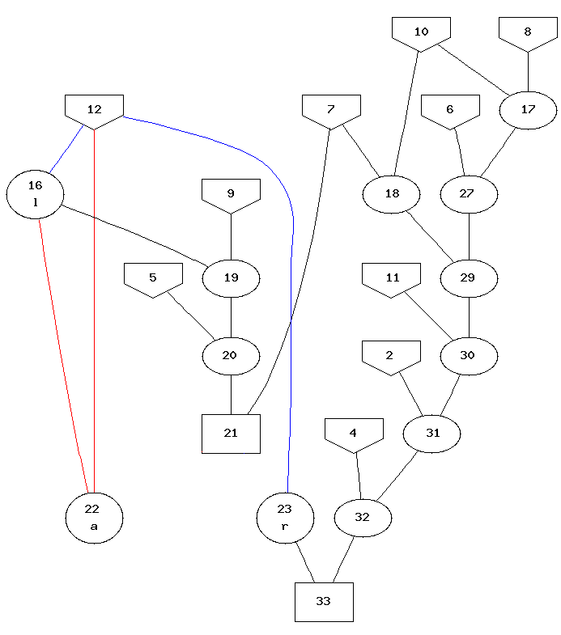

Structural Verification

Sanity Checks
- Parents of derived formulae exist
- Implicit in semantic verification
- Derivation is acyclic
- Refutations have a false root
Explicit Splitting
- Both sides of refuting splits have a false root
- Splitting often used only to create the anti-kid
- Split refutations are independent
Use of Assumptions
- Assumptions are recorded
- Assumptions are propagated
- Assumptions are discharged